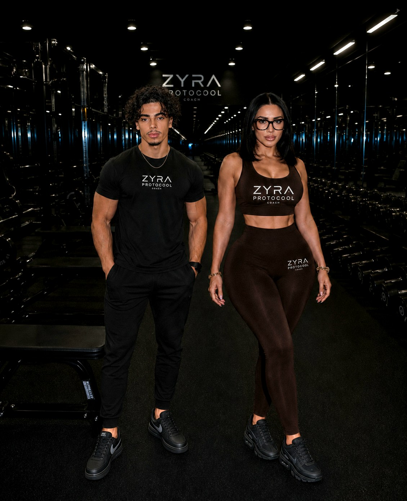

Tu prends une photo
Ton corps en entier, ou seulement la zone que tu veux travailler. Depuis l'appareil photo ou ta galerie.
Une photo suffit. L'IA lit ta morphologie et construit un programme calibré sur ton corps. Coach vocal, coach écrit, analyse d'assiette et suivi de rééducation — cinq outils, 287 exercices, zéro abonnement en salle.

Android & iOS Aucune boutique d'applications Sans carte bancaire
Conçu pour tous les terrains
Jusqu'ici tu t'entraînais, mais tu ne perdais pas où tu voulais et tu ne te musclais pas comme tu voulais. Programme au hasard, technique jamais corrigée, alimentation approximative, aucune trace de tes progrès. ZYRA règle tout ça d'un coup : cinq outils réunis dans une seule application, qui travaillent sur le même dossier — le tien.
Trois étapes. Zéro questionnaire.
Ton corps en entier, ou seulement la zone que tu veux travailler. Depuis l'appareil photo ou ta galerie.
Elle situe ta morphologie, repère les déséquilibres et choisit les mouvements que ton corps peut réellement exécuter.
Séries, répétitions, repos, minuteur, erreurs à éviter. Et un coach joignable pour ajuster à tout moment.
Un seul dossier. Le coach sait déjà où tu en es.
Muscles, séries, repos, matériel, exécution, variantes. Et les erreurs fréquentes — la partie que les autres oublient.
McKenzie, McGill, Alfredson, Jobe, Codman : les protocoles employés en cabinet, avec leurs repères d'exécution et surtout leurs signaux d'arrêt.
Un niveau tous les dix exercices terminés. Seul l'entraînement compte.
Synchronise ta montre avec l'application : fréquence cardiaque, calories, séances et anneaux d'activité remontent automatiquement dans ton suivi. Un seul endroit pour tout voir, aucune app de plus à ouvrir.
Apple WatchWear OSGarminCompatible Bluetooth
« J'ai enfin compris pourquoi mon squat me faisait mal au dos. La fiche m'a montré l'erreur en trois lignes. »
« Le journal photo, je l'ai montré à mon kiné. Il a vu en dix secondes ce que je n'arrivais pas à lui expliquer. »
« Je photographie mon assiette le midi. En deux semaines j'ai vu où partaient mes calories, sans rien peser. »
Témoignages d'utilisateurs, recueillis avec leur accord. Les prénoms sont réels, les noms abrégés. Les résultats varient selon chaque personne.
Glisse la barre pour comparer


−12 kg en 4 mois · programme généré par l'IA
Résultat individuel obtenu avec un suivi régulier. Les résultats varient selon chaque personne (morphologie, alimentation, assiduité). Photo non contractuelle.
Rien à télécharger. Un geste, et elle est sur ton écran d'accueil.
Une semaine de Boost + offerte pour tout tester. Sans engagement.
1 semaine offerte en Pass VIP
Sans engagement · résiliable depuis ton profil
Une photo, et ton programme est prêt. Le coach, lui, est déjà en ligne.
Non. La bibliothèque contient une famille « poids du corps » complète, une famille élastiques et une famille haltères. Le programme généré tient compte du matériel dont tu disposes. Si tu t'entraînes en salle, les exercices machine et barre sont là aussi.
Une photo nette, de face, en lumière correcte, corps entier si tu veux un programme complet. Si tu vises une zone précise, cadre cette zone. Tu peux prendre la photo dans l'application ou la choisir dans ta galerie.
Elle situe un repas, elle ne le pèse pas. C'est pour ça que le résultat est donné en fourchette, avec un indice de confiance affiché. Pose un couvert ou ta main à côté de l'assiette : l'échelle améliore nettement l'estimation. Pour un suivi au gramme près, il faut une balance.
Tu appuies sur le bouton d'appel, le navigateur demande l'accès au micro, et tu parles normalement. Le coach répond à voix haute et tout est retranscrit par écrit, copiable en un geste. Si le micro est refusé ou indisponible, l'appel continue au clavier.
Non, et ce n'est pas le but. Le suivi corporel documente ce que tu observes entre deux rendez-vous et produit un rapport daté que ton praticien peut lire en quelques secondes. Aucun diagnostic n'est posé. En cas de douleur brutale, de perte de sensibilité, de fièvre ou de gonflement soudain : consulte.
Un niveau tous les dix exercices terminés, sur huit paliers. Seuls les exercices que tu valides comptent : ni les analyses photo, ni les questions au coach. C'est volontaire — le compteur mesure l'entraînement, pas l'usage de l'application.
Rien sur un store. L'application fonctionne dans le navigateur et peut s'ajouter à l'écran d'accueil en un geste, sur Android comme sur iOS. Elle s'ouvre alors en plein écran, sans barre d'adresse, comme une application native.
La création de compte et le démarrage sont gratuits, sans carte bancaire et sans engagement. Tu crées ton compte, tu lances ta première analyse, et tu vois si l'outil te convient avant toute autre question.
Oui. Tu indiques ton niveau au départ et la bibliothèque se filtre sur des exercices que tu peux réellement exécuter. Chaque fiche détaille l'exécution étape par étape et surtout les erreurs fréquentes — c'est là que se jouent la progression et la sécurité quand on débute.
Elles sont rattachées à ton compte et servent uniquement à produire tes analyses et ton suivi. Le détail complet du traitement figure dans la politique de confidentialité, accessible depuis ton profil.
Conditions d'utilisation · de téléchargement · financières · données personnelles — version du 28 juillet 2026
Les présentes conditions générales régissent l'accès et l'utilisation de l'application ZYRA PROTOCOL, éditée par Brice Jacotet — Groupe Alpha Nex Strasbourg, 15 route de Hausbergen, 67300 Schiltigheim, France, contact strassweb67@gmail.com. La création d'un compte vaut acceptation pleine et entière des présentes. L'éditeur se réserve le droit de les modifier à tout moment ; la version applicable est celle en vigueur au jour de l'utilisation. En cas de modification substantielle, l'utilisateur en est informé et son maintien sur le service vaut acceptation.
Le service est réservé aux personnes majeures ou aux mineurs disposant de l'autorisation de leur représentant légal. L'utilisateur s'engage à fournir des informations exactes, à conserver ses identifiants confidentiels et à ne pas céder son compte. Sont notamment interdits : l'usage automatisé ou massif du service, la rétro-ingénierie, l'extraction de la base d'exercices, l'envoi de contenus illicites, l'usurpation d'identité et le contournement des mesures techniques de protection. L'éditeur peut suspendre ou supprimer sans préavis tout compte contrevenant.
Nature du service. ZYRA PROTOCOL est un outil d'accompagnement sportif. Il ne constitue ni un dispositif médical, ni un acte de télémédecine, ni une consultation. Il ne pose aucun diagnostic, ne détecte aucune pathologie et ne prescrit aucun traitement. Il ne remplace ni un médecin, ni un kinésithérapeute, ni un ostéopathe, ni un diététicien. L'utilisateur reconnaît pratiquer une activité physique sous sa seule responsabilité et déclare s'être assuré de son aptitude. En cas de douleur, de pathologie connue, de grossesse, de traitement en cours ou de suites d'accident ou d'opération, un avis médical préalable est requis. Les estimations nutritionnelles sont fournies à titre indicatif, en fourchette et avec indice de confiance ; elles ne se substituent ni à une pesée ni à un suivi diététique.
L'application est distribuée sous forme d'application web progressive (PWA) accessible depuis un navigateur ; elle peut être ajoutée à l'écran d'accueil sans passer par une boutique d'applications. Aucun exécutable n'est installé sur le terminal. L'installation requiert un navigateur récent, une connexion internet et un espace de stockage local suffisant. Les coûts de connexion, de données mobiles et d'équipement restent à la charge de l'utilisateur. L'éditeur ne garantit ni la compatibilité avec tout terminal ou navigateur, ni une disponibilité ininterrompue : le service peut être suspendu pour maintenance, mise à jour ou raison technique. Des mises à jour peuvent être appliquées automatiquement, y compris pour des motifs de sécurité, sans action de l'utilisateur.
La création de compte et l'accès aux fonctionnalités de base sont gratuits, sans carte bancaire et sans engagement. L'éditeur se réserve le droit d'introduire des fonctionnalités payantes ou des formules d'abonnement ; leurs prix, périmètre et modalités seront alors affichés avant toute souscription et aucun débit ne pourra intervenir sans consentement exprès préalable. Le cas échéant, les prix sont indiqués en euros toutes taxes comprises. Tout abonnement souscrit se renouvelle par tacite reconduction pour une durée identique, sauf résiliation avant l'échéance depuis l'espace personnel ; la résiliation prend effet à la fin de la période en cours, sans remboursement au prorata. Conformément à l'article L221-18 du Code de la consommation, l'utilisateur consommateur dispose d'un délai de rétractation de quatorze jours à compter de la souscription ; il est informé que l'exécution immédiate du service à sa demande expresse entraîne renonciation à ce droit une fois le service pleinement exécuté.
Responsable de traitement : Brice Jacotet — Groupe Alpha Nex Strasbourg. Contact : strassweb67@gmail.com.
Données collectées : identité et coordonnées du compte ; objectif sportif, niveau déclaré et historique de séances ; photographies transmises pour les analyses corporelle, nutritionnelle et de suivi ; notations de douleur, d'amplitude et de gêne ; contenus des échanges avec le coach IA, écrits comme vocaux ; données de géolocalisation ; informations techniques relatives à l'appareil (modèle, système d'exploitation, navigateur, langue, résolution, identifiants techniques, adresse IP, journaux de connexion et d'usage).
Finalités : fourniture et personnalisation du service ; gestion du compte et de la sécurité ; établissement de statistiques d'usage ; amélioration continue de l'application, de ses modèles d'intelligence artificielle et de la pertinence des analyses. À cette dernière fin, les données mentionnées ci-dessus, y compris la géolocalisation et les informations relatives à l'appareil, peuvent être exploitées sous forme agrégée ou pseudonymisée pour évaluer, corriger, entraîner et faire évoluer le service.
Bases légales : l'exécution du contrat pour la fourniture du service ; l'intérêt légitime de l'éditeur pour la sécurité et la mesure d'audience ; le consentement pour la géolocalisation, pour les données de santé et pour l'utilisation des contenus aux fins d'amélioration des modèles. Ce consentement est recueilli séparément, est facultatif et peut être retiré à tout moment depuis le profil, sans que ce retrait n'affecte la licéité du traitement antérieur ni l'accès aux fonctionnalités essentielles.
Données sensibles : les photographies corporelles, les notations de douleur et les éléments de suivi de rééducation constituent des données concernant la santé au sens de l'article 9 du RGPD. Elles ne sont traitées que sur la base d'un consentement explicite, distinct de l'acceptation des présentes conditions.
Destinataires : l'éditeur, ses sous-traitants techniques d'hébergement et de fourniture de modèles d'intelligence artificielle, agissant sur instruction et engagés par contrat. Certains traitements peuvent impliquer un transfert hors Union européenne, encadré par les clauses contractuelles types de la Commission européenne. Aucune donnée n'est vendue.
Durées : données de compte conservées pendant la durée d'utilisation puis trois ans à compter du dernier contact ; photographies et analyses supprimées sur demande et au plus tard à la clôture du compte ; journaux techniques conservés douze mois.
Droits : accès, rectification, effacement, limitation, opposition, portabilité et retrait du consentement, exerçables à strassweb67@gmail.com. L'utilisateur peut introduire une réclamation auprès de la CNIL, 3 place de Fontenoy, 75007 Paris.
L'application, son code, son interface, sa charte graphique et sa base de 287 fiches d'exercices sont protégés et demeurent la propriété exclusive de l'éditeur. Aucune reproduction, extraction, réutilisation ou adaptation n'est autorisée sans accord écrit préalable. L'utilisateur conserve la propriété des contenus qu'il transmet et concède à l'éditeur une licence non exclusive, limitée aux finalités décrites à l'article 5 et à la durée de conservation qui y est indiquée.
L'éditeur est tenu d'une obligation de moyens. Sa responsabilité ne saurait être engagée en cas de dommage résultant d'une utilisation non conforme, du non-respect des avertissements médicaux, d'une pratique sportive inadaptée à l'état de santé de l'utilisateur, d'une interruption de service, d'un défaut du terminal ou du réseau, ou d'un cas de force majeure. Les résultats présentés sont individuels et non contractuels : ils dépendent de la morphologie, de l'alimentation et de l'assiduité de chacun. Aucune disposition ne saurait écarter la responsabilité légale de l'éditeur en cas de dommage corporel ou de faute lourde.
Les formats sportifs, marques de matériel et enseignes de salle mentionnés le sont à titre purement indicatif, pour décrire les univers couverts par la bibliothèque d'exercices. Ils appartiennent à leurs propriétaires respectifs. Aucun partenariat, affiliation, parrainage ou approbation n'est revendiqué et aucun logo n'est reproduit.
Les présentes sont soumises au droit français. En cas de différend, l'utilisateur s'adresse d'abord au service client. À défaut de solution amiable sous trente jours, il peut recourir gratuitement à un médiateur de la consommation ou saisir la plateforme européenne de règlement en ligne des litiges. À défaut, compétence est attribuée aux juridictions françaises compétentes, l'utilisateur consommateur conservant le bénéfice des règles de compétence protectrices de son domicile.
Ton coach IA personnel
Bienvenue
Parcourir par catégorie
Sans engagement · 19,99 € / mois
Choisis ce que l'IA doit examiner en priorité sur ta photo. Le programme généré s'aligne sur ce réglage.
Tu ajoutes ta photo. Cadre la zone que tu veux faire évoluer — jambes, pectoraux, dos, bras, épaules, abdos. L'IA détecte seule la partie du corps, tu n'as rien à sélectionner.
L'analyse tourne, environ 15 secondes. Masse musculaire visible, tonicité, symétrie droite-gauche, posture et gras apparent sur la zone. Le calcul est calibré sur ton âge et ton poids enregistrés à l'inscription.
Tu reçois ton compte rendu, puis tes exercices. Ce que l'IA a observé s'affiche ici même, à la place de ces trois étapes, suivi des mouvements prescrits avec séries, repos et conseils. Le coach reste joignable sous tes résultats.
Analyses illimitées · nutrition complète
Aujourd'hui
Statistiques
ton@mail.com
Recevoir un programme exclusif chaque semaine.
Mes informations
Mon objectif fitness
Réglages de l'analyse
Profondeur d'analyse appliquée à chaque photo envoyée.
19,99 € / mois · sans engagement
Cinq outils. Cinq façons de reprendre la main sur ton corps.Choisis ton terrain.
Tu photographies la même zone à intervalles réguliers. L’application aligne les clichés, note ce que tu ressens, et construit une courbe d’évolution que tu peux montrer à ton kiné ou à ton médecin.
Même zone, même distance, même lumière. Un gabarit t’aide à te replacer exactement comme la fois précédente.
Douleur de 0 à 10, amplitude de mouvement, gonflement, gêne au quotidien. Ce sont les mêmes repères qu’un praticien te demande en consultation.
Les clichés se comparent côte à côte et les scores se tracent dans le temps. Ce qui progresse et ce qui stagne devient visible.
Un résumé daté, chiffré, prêt à être montré en consultation. Ton praticien voit d’un coup d’œil ce qui s’est passé entre deux séances.
Il ne pose aucun diagnostic et ne détecte aucune anomalie. Une photo ne montre ni une fracture, ni une lésion nerveuse, ni l’état d’une cicatrisation profonde.
Son rôle est de documenter ce que tu observes et ce que tu ressens, entre deux rendez-vous. C’est ton kiné, ton médecin ou ton ostéopathe qui interprète. Cet outil leur donne de la matière, il ne les remplace pas.
Douleur brutale, perte de sensibilité, fièvre, gonflement soudain : consulte, ne photographie pas.
Tout reste sur ton téléphone. Rien n’est envoyé nulle part.
Résumé daté et chiffré de la période. Montre-le en consultation ou envoie-le avant le rendez-vous.
Tu vas parler de vive voix avec ton coach.
Il te répond comme au téléphone, et tout est retranscrit par écrit.
Appuie pour lancer l’appel · micro demandé
Entraînement, nutrition, récupération, matériel, motivation
Vue du dessus, plat entier dans le cadre. Un couvert à côté donne l’échelle et améliore nettement l’estimation.
Elle reconnaît les aliments, estime les portions et en déduit calories et macronutriments.
Fourchette calorique, répartition protéines-glucides-lipides, allergènes possibles, avis du coach et une amélioration concrète.
Une photo ne pèse pas. L’estimation est donnée en fourchette, avec un indice de confiance : elle situe un repas, elle ne remplace pas une balance.